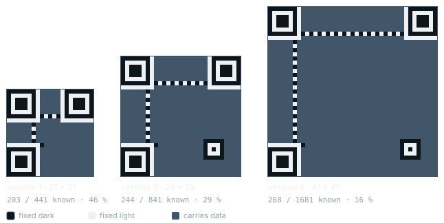
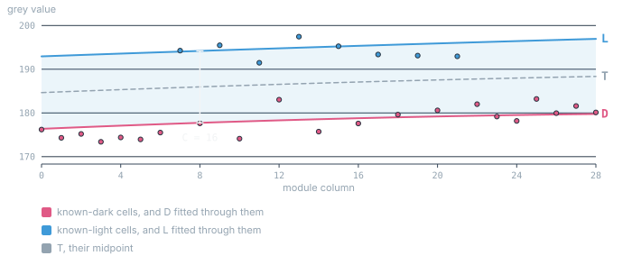
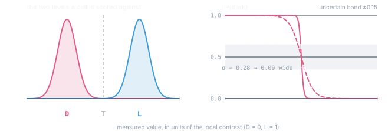
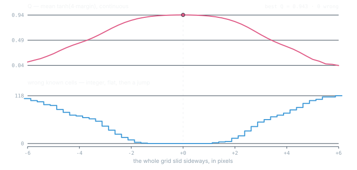
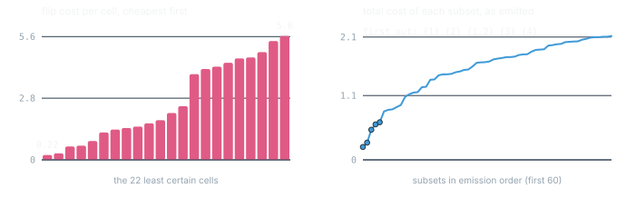
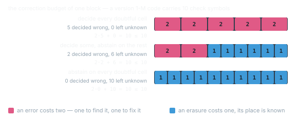

how it works
← back to the toolAn ordinary decoder binarises the image, samples a grid and either returns a string or nothing. qrsalvage takes the same problem apart into steps that can each be measured — because a QR code carries, inside itself, a few hundred cells whose correct value is fixed by the specification. Everything below is scored against those.
- The known cells
- Two brightness fields
- A probability per module
- Fitting the grid
- What is searched, not guessed
- Ordered probing
- Reed-Solomon and erasures
- Where it stops
01The known cells
Finder patterns, separators, timing rows, alignment patterns and one always-dark module are not data. The standard fixes them, so their true values are known before anything is read. In a version 3 code that is 244 of 841 cells — about 29 %.

structure_mask the solver scores itself with. The fixed cells cluster around
the border — which is why the uncertainty model cannot be estimated from them alone, and
why §03 has to add a second term for the middle.
That is the whole idea. Every later step — the brightness model, the grid, the version, the polarity — produces a number that can be checked against cells whose answer is already settled. Nothing has to be believed.
02Two brightness fields
On a curved, unevenly lit surface there is no single threshold that separates dark from light. Worse, the dark level and the light level drift by different amounts: a glare highlight lifts white paper far more than it lifts black ink.
So two independent quadratic fields are fitted by ordinary least squares, one through the known-dark cells and one through the known-light ones:
L(r,c) = b₀ + b₁r + b₂c + b₃r² + b₄c² + b₅rc
a = argmin Σknown dark ( D(r,c) − mean(r,c) )² r, c — module row and column · mean(r,c) — measured grey value of that cell
six coefficients each, solved from roughly 120 known cells, so heavily overdetermined
The threshold is their midpoint and the contrast their difference, both varying across the code:

fixtures/engraved-curved-hard.png: the two levels are separated by roughly
sixteen grey values out of 255, and they drift across the code together. A single global
threshold has to be right to within a few grey values everywhere at once; the midpoint of
two fitted fields does not.
03A probability per module
A cell is not classified, it is scored. Two Gaussians of equal width, one centred on the dark level and one on the light, give a log-odds that is linear in the measurement:
P(dark) = 1 / ( 1 + e−ℓ ) x = mean / C, D̂ = D / C, L̂ = L / C — all normalised by the local contrast
so a faint code and a crisp one are measured on the same scale
Why σ is a field and not a number
The obvious estimate of σ is the scatter of the known cells around their own fitted level. It is also not enough, and the failure is instructive: the known cells all sit around the border of the code. When they happen to be clean, σ comes out small and the model becomes confident about the data cells in the middle with no grounds for it.
This was observed on a synthetic case that placed the grid perfectly, reported zero wrong known cells and zero uncertain cells — and would not decode. The solver had nothing to probe because nothing looked doubtful.
So a second, independent term is added: each cell's own internal spread. A module whose interior is uniform is trustworthy; one that is half dark and half light is not, and that holds in the middle where no known cell reaches.
s(r,c) — standard deviation of the pixels inside that one cell
s̄ — median of s over the known cells, the baseline a dot-raster engraving gives everything
k = 1.5 · only the excess over the baseline counts, or the signal is flattened

fixtures/engraved-curved-hard.png. By eye the two are almost the same curve,
so the figure marks the quantity that matters instead: how wide a range of measurements the
cell reports as undecided. It is 0.02 of the local contrast against 0.09 — a factor
of nearly six in how readily a cell admits doubt, and therefore in whether the search ever
looks at it. The shaded strip is the ±0.15 the solver counts as uncertain.
04Fitting the grid
A homography maps four corners onto a square. It cannot represent a cylinder — and a QR code on a light bulb is on a cylinder. The best available approximation is not analytically available, but it is findable.
Eight parameters, the four corner coordinates. The objective is the mean contrast-normalised margin over the known cells, squashed so that one badly-placed cell cannot dominate:
Q = meanknown tanh( 4 · m ) maximised by coordinate descent: each coordinate is nudged by ±δ, improvements are kept,
and δ halves when a full sweep finds nothing. δ starts at 3 px and stops below 0.05 px

fixtures/engraved-curved-hard.png is slid sideways one pixel at a time and
both quantities are recorded. Q moves for every fraction of a pixel and points back at the
optimum from anywhere on the curve; the error count is flat, then jumps, and past about
two pixels it is uselessly saturated. Two quantities on two scales, so two panels — never
one plot with two axes.
On the photograph this project started with, that descent took the sampling error from 18 wrong known cells to 2, and only then did the code decode.
When the plane is not enough
A homography maps straight lines to straight lines, and four corners can only tilt the plane — they have no way to say bow. So the winning grid gets one more stage: two quadratic bows, one swept along each axis, four parameters in all. The parametrisation is deliberately the smallest one that can express what a curved surface does. A first attempt with a free 3×3 control lattice — eighteen parameters — overfitted the border: the objective is measured on the known cells, which ring the code, so the lattice bought border margin by bending the unmeasured middle, and images the flat grid solved stopped decoding. Four separable parameters cannot say "fix the border, bend the middle"; the constraint is the parametrisation itself, with no penalty weight to tune. On a photographed fabric label this stage is the difference between no result at any budget and decoding on the first attempt.
05What is searched, not guessed
Four things could be estimated from the image and are instead enumerated, because a wrong guess is invisible while a wrong candidate is obvious in the known cells.
- The version. Every candidate size gets its own grid fit. On the bulb the winner had 2 of 244 cells wrong and the runner-up 69 — the estimate from the finder width had landed between two candidates.
- The resolution. A finder is seven modules wide, so the module size follows from it. The preprocessing assumes roughly nine pixels per module; outside that band the image is rescaled — in both directions. A code can fail for being photographed too well.
- The polarity. Light-on-dark cannot be settled by looking at the finders: a finder is nested squares and so is its inverse. It is settled after the fit, on the error count.
- A missing finder. Two are enough. A QR code is square, which leaves six discrete possibilities for the third — perpendicular from either end on either side, or the two being the diagonal pair. All six are fitted.
06Ordered probing
When the matrix does not decode, the least certain cells are flipped — but in an order, and the order is the whole trick. Flipping a cell against its more likely reading costs its log-likelihood ratio:
structure cells get cost ∞ and are never touched
Subsets of the cheapest cells are then enumerated in ascending total cost by a best-first search over a heap. Each subset already emitted spawns exactly two successors — extend it, or advance its last element — which yields every subset exactly once, in order.

fixtures/engraved-curved-hard.png: the cheapest doubt costs
0.22 against 5.6 for the twenty-second, a factor of twenty-five. So the order is
not a detail — enumerating the same cells in any other order would spend the whole budget
on combinations that were never plausible. The right panel is the property the heap
guarantees: the total cost never decreases from one emission to the next.
07Reed-Solomon and erasures
Codewords are bytes in GF(2⁸) with primitive polynomial 0x11D. A block of n
codewords carries t check symbols, and the decoder can repair
an erasure costs one, because its position is already known

That factor of two is why the module matrix has three states rather than two. An honest "I don't know, but I know where" is worth twice a guess.
The chain: syndromes Si = r(αi) tell whether the block is intact. Forney syndromes remove the known erasures first — without that step Berlekamp-Massey goes looking for them again as unknown errors and fails. What is left is located by Berlekamp-Massey and Chien search, and the magnitudes come from Forney's formula.
Valid is not the same as correct
With as many erasures as check symbols, Reed-Solomon always finds a valid solution. If the real errors lie outside the erased positions, that solution is cleanly computed and wrong. So the erasure count is raised one step at a time and the sparsest result that an outside check accepts is taken. Without that contradiction from outside, the method returns something every time, and usually nonsense.
Prefixes are not enough either
Raising the count erases the k least reliable codewords — a prefix of the reliability order. Measured on real photographs, the damaged codewords interleave with sound ones in that order, and every sound codeword inside the prefix is a check symbol spent on nothing. Damage at reliability ranks {2,4,6,8,10,12,14,16,18} is unreachable for any prefix — covering rank 18 costs 18 of 15 symbols — while the exact set costs 9. So after the ladder fails, arbitrary erasure sets are enumerated in ascending total doubt, by the same heap that orders the cell probe in §06. Each candidate still has to survive the outside check.
08Where it stops
Measured on synthetic cases with known answers, under otherwise ideal conditions, the limit is resolution:
| pixels per module | recovered |
|---|---|
| 6.0 | 5 / 5 |
| 5.0 | 5 / 5 |
| 4.0 | 1 / 5 |
| 3.0 | 0 / 5 |
Below about five pixels per module the information is not in the image, and no amount of modelling puts it back. Real damage moves that threshold upward, never down.
On thirteen genuinely damaged codes, of which a plain decoder reads one, qrsalvage recovers six and places the grid cleanly on nine. The ones it does not recover mostly fail because too many data modules are physically gone — the method can find and place a code well past the point where it can read one.